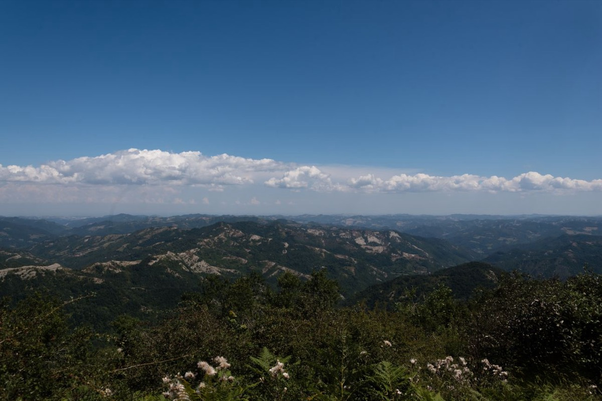

Percorso 2 · Storico
Mugello terra di strade
Futa, Giogo, Colla, Muraglione e i passi che univano i due lati degli Appennini
A PiediCon il Tuo Cane
A Piedi
- Durata
- 2/3 giorni
- Lunghezza
- 51 Km
- Difficoltà
- Difficile
- Dislivello
- 3567 Mt
Traccia (51,3 km)PartenzaArrivo
Porta il percorso con te
Scarica la traccia per il navigatore o per un'app come Komoot, OsmAnd o Wikiloc.
Sentieri e cammini attraversati
- Sentieri CAI
- nr. 52 - nr. 52 A - nr. 00 - nr. 38 - nr. 36 A - nr. 505 A - nr. 16
- Cammini
- SOFT 12 - GEA (Grande Escursione Appenninica) - Via degli Dei - Sentiero Italia - SOFT 14
Descrizione del percorso
Leggi il racconto di Orme del Mugello
Il Passo della Futa punto di partenza del tragitto, situato a circa 903 metri di altitudine, è famoso per il Cimitero Militare Germanico, un luogo di memoria, caratterizzato da un'imponente struttura architettonica che si armonizza con il paesaggio montano circostante. Il cimitero accoglie i resti di circa 31.000 soldati tedeschi caduti durante la Seconda Guerra Mondiale, principalmente nel periodo della campagna sulla Linea Gotica (1944-1945), l'ultima linea difensiva dei nazisti contro l'avanzata delle forze alleate in Italia.
Salendo verso il Monte Gazzarro, che si erge a circa 1125 metri, il percorso diventa più impegnativo
ma estremamente appagante. Qui il paesaggio cambia: si attraversano sentieri boscosi che si aprono periodicamente su balconi naturali, offrendo vedute ampie sull'Appennino. Le faggete diventano protagoniste, intervallate da castagneti e tratti di pascoli.
La vetta del Monte Gazzaro è un punto panoramico eccezionale, dove lo sguardo può spaziare fino alla pianura toscana da un lato e ai rilievi romagnoli dall'altro. La sensazione di isolamento e di immersione nella natura qui è totale, e la pace del luogo è interrotta solo dal canto degli uccelli o dal rumore del vento. Durante i mesi primaverili ed estivi, i prati si riempiono di fiori di campo, mentre in autunno le foreste esplodono in una gamma di tonalità calde.
Dalla vetta del Monte Gazzarro fino al Passo dell’Osteria Bruciata (917 m). Il nome del passo deriva da un’antica osteria che sorgeva in questo luogo strategico, dove i viaggiatori si fermavano per riposarsi durante i lunghi spostamenti attraverso l’Appennino. Secondo la leggenda, l’osteria fu teatro di atti brutali. Si narra che l’osteria fosse gestita da briganti o locandieri disonesti che derubavano e uccidevano i loro ospiti, spesso viandanti o mercanti che attraversavano il passo. Una notte, l’osteria fu incendiata dai paesani per vendicare le vittime, e da allora il luogo ha preso il nome di "Osteria Bruciata”.
Risalendo sulle cime che fanno da spartiacque tra Toscana e Emilia-Romagna degno di nota il Monte Castel Guerrino (1117 m). Il nome "Castel Guerrino" sembra richiamare la presenza di un’antica fortificazione o di un insediamento, che, secondo le tradizioni locali, sorgeva sulla sommità del monte. Secondo alcune storie tramandate oralmente, il monte avrebbe preso il nome da un condottiero o signore della guerra (forse un certo "Guerrino") che avrebbe difeso strenuamente queste terre, ma non ci sono prove storiche documentate. Scendendo verso il Passo del Giogo (882 metri), il percorso diventa più dolce. Si prosegue lungo strade forestali e sentieri ben segnalati, attraversando boschi misti e prati. Il passo stesso, storicamente importante come via di collegamento tra Toscana e Romagna, conserva un fascino particolare. Non mancano rifugi e locande dove riposarsi e rifocillarsi.
Lungo questa tratta, si incontrano spesso segni della storia: mulattiere antiche, resti di trincee e manufatti risalenti alla Seconda Guerra Mondiale, data la vicinanza alla Linea Gotica.
La Linea Gotica nel Mugello è un tratto della linea di difesa fortificata costruita durante la Seconda Guerra Mondiale dai tedeschi, tra il 1943 e il 1944, per rallentare l'avanzata delle forze Alleate verso il nord Italia. Questa linea attraversava diverse regioni dell'Italia centrale e il Mugello rappresenta uno dei suoi passaggi più significativi. Nel territorio del Mugello, la Linea Gotica era costituita da fortificazioni, trincee, postazioni di artiglieria e bunker, distribuiti lungo le colline e i monti che dominano la vallata. Alcuni dei luoghi più noti legati alla Linea Gotica nel Mugello includono i comuni di Borgo San Lorenzo, Scarperia e Vicchio. Il passaggio della Linea Gotica fu teatro di intensi combattimenti tra le forze tedesche in ritirata e le truppe alleate. Oggi, resti di fortificazioni e monumenti commemorativi ricordano quegli eventi tragici. Inoltre, numerosi sentieri storici nel Mugello permettono di esplorare le vestigia della Linea Gotica, offrendo un'opportunità per comprendere la storia della Seconda Guerra Mondiale e il suo impatto sulla regione.
Il paesaggio si apre su dolci colline e vallate che sembrano ondeggiare fino all’orizzonte.
Si percorrono ampie strade forestali attraverso splendidi boschi e tratti panoramici fino a raggiungere la Capanna Bivacco Marcone (1030 m), luogo di sosta spartano ma accogliente. Si tocca la vetta più alta del percorso, Monte Peschiena (1198 m). Proseguendo verso il Passo del Muraglione, si incontrano tratti di crinale con una vista mozzafiato: da una parte la Toscana, con i suoi morbidi rilievi e la luce dorata tipica di questa regione, dall’altra la Romagna, con vallate più aspre e selvagge.
Man mano che ci si avvicina al Muraglione, i sentieri diventano più rocciosi, con una vegetazione che si dirada progressivamente. Qui, il vento può essere una presenza costante, dando il nome al passo stesso. Il Passo del Muraglione (907 m), prende il nome dal grande muro costruito nel XIX secolo per proteggere i viandanti dal vento. Il luogo è un crocevia per escursionisti, motociclisti e amanti della natura, nonché arrivo del percorso.
Il faggio e il fulmine
Si racconta che, durante una tempesta, un pastore si riparò sotto un grande faggio per sfuggire alla pioggia. Al termine del temporale, notò che l’albero non era stato colpito dal fulmine, mentre altri intorno a lui sì. Da quel momento, il faggio venne considerato un albero protettivo, poiché si credeva che attirasse meno i fulmini rispetto ad altre piante. Questa credenza è in parte supportata dalla scienza: il faggio, grazie alla sua composizione e al suo contenuto d' acqua, è meno soggetto a scariche elettriche rispetto ad alberi come la quercia o il pioppo
Dormire, mangiare e prodotti lungo il percorso
Strutture ricettive (98)
- Affittacamere Al Mulino contatti
- Affittacamere Via Degli Dei contatti
- Agriturismo Borgo Scaffaia contatti
- Agriturismo Il Belvedere contatti
- Agriturismo Il Palazzaccio contatti
- Agriturismo La Matteraia contatti
- Agriturismo Lazzari - Agricampeggio contatti
- Agriturismo Pian Barucci contatti
- Agriturismo Poggio Bartoli contatti
- Agriturismo Universal Harmony contatti
- Agriturismo Vaiursole contatti
- Al Volo Del Nibbio contatti
- Albergo Il Sergente contatti
- Alla Corte Di Carla contatti
- Badia Di Moscheta contatti
- BeB AURA contatti
- BeB CA'MINO contatti
- BeB CIRCUIT contatti
- BeB ELISIR DI TAGLIAFERRO contatti
- BeB IL PITTORE contatti
- BeB IL PODERE DELLA PIAZZA contatti
- BeB KINGA contatti
- BeB LA CASA DI COSIMO contatti
- BeB LA PIEVE contatti
- BeB LE DUE VOLPI contatti
- BeB MARETTI contatti
- BeB VACANZE IN MUGELLO contatti
- Borgo! Hospitality contatti
- Ca'Mino Di Farneti Mirco contatti
- Camping Il Sergente contatti
- Camping Village Mugello Verde contatti
- Casa Amerigo contatti
- Casa Torta contatti
- Casale San Giorgio contatti
- Castello Del Monsignore contatti
- Catelaccio contatti
- Ca’ Nova contatti
- Collecchio contatti
- Fantino contatti
- Fattoria I Ricci contatti
- Fattoria La Topaia contatti
- Hotel Ebe contatti
- Hotel La Rosa contatti
- Hotel Marrani contatti
- I Suoni Del Bosco contatti
- Il Borghetto contatti
- Il Borgo Di Elisa contatti
- IL COLLE BeB contatti
- Il Fangaccio contatti
- Il Gallo Birichino contatti
- Il Nido di Gabbiano BeB contatti
- Il Podere Di Tullio contatti
- Il Poggio Alle Ville contatti
- Il Villino contatti
- La Casina Delle Fate Nel Castellaccio contatti
- La Chiusuraccia contatti
- La Colombaia contatti
- La Corte Di Ronzano contatti
- La Fattoria Del Farneto contatti
- La Felicina contatti
- La Serra contatti
- La Stazione Di Monta contatti
- La Terrazza contatti
- Le Scalelle contatti
- Le Spiagge contatti
- Lo Sghimbescio contatti
- Locanda Degli Artisti contatti
- MONSIGNOR DELLA CASA COUNTRY RESORT eSPA contatti
- Mugello Hostel contatti
- Mugello Vacanze contatti
- My Home contatti
- PALAZZO TORRIANI Residenza d'Epoca contatti
- Piano Rosso contatti
- Podere I Lastri contatti
- Podere La Carbonaia contatti
- Podere La Casella contatti
- Podere Ugolini contatti
- Poggio Di Sotto contatti
- Poggio Savelli contatti
- Residence Le Isole contatti
- Residences E Appartamenti- Villa Torricelli Il Giardinetto contatti
- Residenza Di Campagna Montelleri contatti
- Rifugio Alpino Casa Al Giogo contatti
- Rifugio Alpino Castellonchio contatti
- Rifugio Escursionistico Badia Moscheta contatti
- Rupecanina contatti
- Short Term Rental In Borgo San Lorenzo contatti
- Short Term Rental In Marradi contatti
- Short Term Rental In Scarperia E San Piero contatti
- Short Term Rental In Vicchio contatti
- Tenuta Le Tre Virtu' contatti
- Tenuta Mazzini contatti
- Tertulia coliving contatti
- Tre Fiumi contatti
- Villa Cerreto contatti
- Villa Di Pilarciano contatti
- Villa La Commenda Concordia contatti
- Villa Medicea Lo Sprocco contatti
Aziende (20)
- Agriturismo Lazzari
- Azienda Agricola Palazzo Vecchio contatti
- Azienda Agricola Poggio dei Roti contatti
- B.beb La Casa di Cosimo
- Bacco del Monte di Elena Bartalucci contatti
- Banco Fiorentino - Filiale di Borgo San Lorenzo
- Banco Fiorentino - Filiale di Luco di Mugello
- Banco Fiorentino - Filiale di Scarperia
- Banco Fiorentino - Filiale di Vicchio
- Camping Village Mugello Verde contatti
- Farming
- Il Poggio alle ville di Raffaele Edlmann contatti
- IncorniciArti
- Marchisoro Farm
- Monsignor della Casa Country Resort e Spa
- Rifondazione agricola di Sandra Nerbosi contatti
- Società agricola Bacciotti s.s. di Sandra e Roberto Mongili contatti
- Società agricola Il Ponte di Trotta Rocco e Lompi Stefania s.s. contatti
- Tenuta Cafaggiolo contatti
- Tenuta Matteraia contatti
Il nome della struttura porta al suo sito web; "contatti" apre la scheda con telefono e mail sul portale turistico Mugello Toscana (per chi non ha un sito c'è solo quella). Le aziende portano ai loro siti. Sono tutte segnate anche sulla mappa.
Percorso, traccia e testi di Orme del Mugello, pubblicati con il loro permesso.